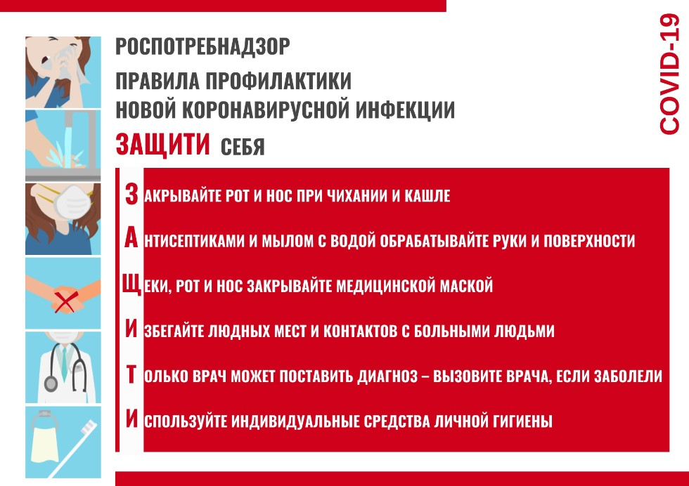

Советы по профилактике COVID-19

Соблюдайте актуальные рекомендации органов здравоохранения для вашего региона.
Чтобы предупредить распространение COVID-19:
Держитесь на безопасном расстоянии от людей (не менее 1 метра), даже если они не кажутся заболевшими.
Носите маску в общественных местах, особенно в закрытых помещениях и там, где соблюдать безопасную дистанцию невозможно.
Старайтесь избегать закрытых, плохо вентилируемых мест. Находясь в помещении, открывайте окна.
Соблюдайте правила гигиены рук. Часто мойте их водой с мылом или обрабатывайте спиртосодержащим антисептиком для рук.
Сделайте прививку, когда подойдет ваша очередь. Следуйте местным рекомендациям по вакцинации.
При кашле или чихании прикрывайте рот и нос локтевым сгибом или платком.
Если вы чувствуете недомогание, оставайтесь дома.
Если у вас повысится температура, появится кашель и одышка, обратитесь за медицинской помощью. Чем раньше вы это сделаете, тем быстрее вас направят к нужному врачу. Так вы защитите себя и предотвратите распространение вирусов и других инфекций.